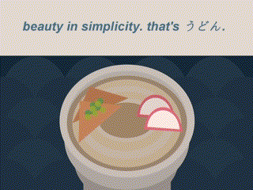

Animation using Java
This is a short animation entirely made in Java and its Graphics2D library. This project shows an understanding of object-oriented programming as certain methods are used to create and manipulate shapes.

Seam Carver using Python
This program is for removing "seams" from an image in such a way that the core content of the image is still preserved. This project shows an understanding of different data structures and algorithms as seams are computed through a recursive algorithm.